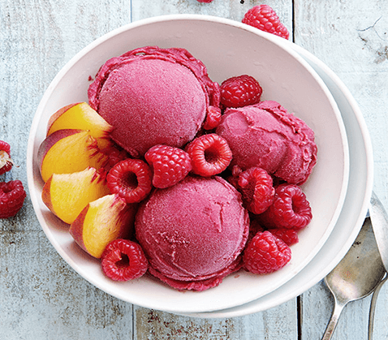

Speciale gerechten
Zomerse fruitsalade
"Fruitsalade, een groot favoriet bij de eerste zonnestralen. Deze combinatie is waanzinnig, maar wees niet bang te experimenteren met de seizoensproducten!"
Ingrediënten
- 1 mango
- 250 gram ananas stukjes
- 200 gram watermeloen stukjes
- 100 gram blauwe bessen
- 4 passievruchten
- 1 handsinaasappel
- 3 gram verse munt
Simpele bokkenpootjestaart
"Een heerlijke taart ter gebruik voor desserts of bij de koffie"
(met advocaat!).
Benodigdheden bokkenpootjestaart
Sorbet van frambozen en perzik
"Godzijdank voor gemakkelijke desserts zoals deze frambozen- en perziksorbet."
Ingrediënten
- 1 kop suiker
- 1 kop water
- 300 gram frambozen (vers of bevroren)
- 2 kopjes perziken (vers of bevroren)
- Mix de frambozen tot puree.
- Kook 200 ml water met de suiker en de glucosestroop.
- Haal de gelatineblaadjes uit het koude water en voeg deze samen met de frambozenpuree toe.
